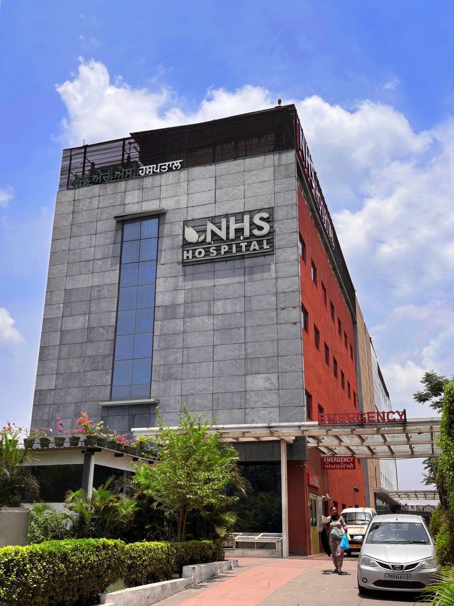
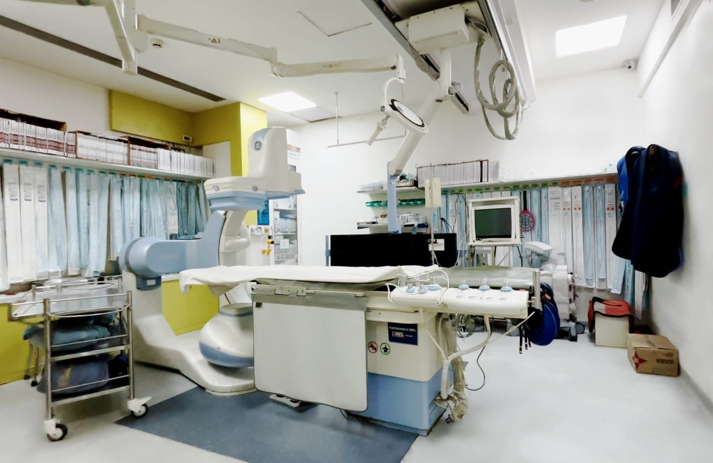

Treatments we are known forਸਾਡੇ ਮੁੱਖ ਇਲਾਜ
Five institutes, each led by a senior consultant. Pick the one closest to your problem — every page tells you what is treated and what happens next.ਪੰਜ ਵਿਭਾਗ, ਹਰੇਕ ਦੀ ਅਗਵਾਈ ਸੀਨੀਅਰ ਡਾਕਟਰ ਕਰਦੇ ਹਨ। ਆਪਣੀ ਤਕਲੀਫ਼ ਨਾਲ ਮਿਲਦਾ ਵਿਭਾਗ ਚੁਣੋ — ਹਰ ਪੰਨਾ ਦੱਸਦਾ ਹੈ ਕੀ ਇਲਾਜ ਹੁੰਦਾ ਹੈ ਤੇ ਅੱਗੇ ਕੀ ਹੋਵੇਗਾ।
Robotic knee & hip replacementਰੋਬੋਟਿਕ ਗੋਡਾ ਤੇ ਚੂਲਾ ਬਦਲਣਾ
Total and half knee replacement, hip replacement, sports injuries, scoliosis and trauma care.ਪੂਰਾ ਤੇ ਅੱਧਾ ਗੋਡਾ ਬਦਲਣਾ, ਚੂਲਾ ਬਦਲਣਾ, ਖੇਡਾਂ ਦੀਆਂ ਸੱਟਾਂ, ਰੀੜ੍ਹ ਦੀ ਟੇਢ ਤੇ ਹਾਦਸੇ ਦਾ ਇਲਾਜ।
Joint pain consultationਗੋਡੇ ਦੇ ਦਰਦ ਦੀ ਸਲਾਹ Cardiac sciencesਦਿਲ ਦੇ ਰੋਗCardiology & second opinionਦਿਲ ਦਾ ਇਲਾਜ ਤੇ ਦੂਜੀ ਰਾਏ
Angiography and angioplasty, pacemakers, and a written review of reports if a stent has been advised.ਐਂਜੀਓਗ੍ਰਾਫ਼ੀ ਤੇ ਐਂਜੀਓਪਲਾਸਟੀ, ਪੇਸਮੇਕਰ, ਅਤੇ ਜੇ ਸਟੰਟ ਪਾਉਣ ਦੀ ਸਲਾਹ ਮਿਲੀ ਹੈ ਤਾਂ ਰਿਪੋਰਟਾਂ ਦੀ ਲਿਖਤੀ ਦੂਜੀ ਰਾਏ।
Report review in 24–48 hours24–48 ਘੰਟਿਆਂ ਵਿੱਚ ਰਿਪੋਰਟ ਦੀ ਜਾਂਚ Urologyਪਿਸ਼ਾਬ ਤੇ ਗੁਰਦਾLaser treatment for kidney stonesਗੁਰਦੇ ਦੀ ਪੱਥਰੀ ਦਾ ਲੇਜ਼ਰ ਇਲਾਜ
Holmium laser, RIRS, URS and PCNL for stones; HoLEP for an enlarged prostate. No open incision.ਪੱਥਰੀ ਲਈ ਹੋਲਮੀਅਮ ਲੇਜ਼ਰ, RIRS, URS ਤੇ PCNL; ਵਧੇ ਹੋਏ ਪ੍ਰੋਸਟੇਟ ਲਈ HoLEP। ਖੁੱਲ੍ਹਾ ਚੀਰਾ ਨਹੀਂ।
Day-care in suitable casesਢੁਕਵੇਂ ਕੇਸਾਂ ਵਿੱਚ ਉਸੇ ਦਿਨ ਛੁੱਟੀ Nephrologyਗੁਰਦੇ ਦੇ ਰੋਗDialysis & kidney careਡਾਇਲਸਿਸ ਤੇ ਗੁਰਦੇ ਦੀ ਸੰਭਾਲ
Maintenance haemodialysis, critical care nephrology, renal biopsy and long-term kidney treatment.ਨਿਯਮਿਤ ਡਾਇਲਸਿਸ, ICU ਵਿੱਚ ਗੁਰਦੇ ਦਾ ਇਲਾਜ, ਗੁਰਦੇ ਦੀ ਬਾਇਓਪਸੀ ਤੇ ਲੰਮੇ ਸਮੇਂ ਦਾ ਇਲਾਜ।
Scheduled & emergency slotsਤੈਅ ਸਮੇਂ ਤੇ ਐਮਰਜੈਂਸੀ ਸਲਾਟ Gastroenterologyਪੇਟ ਤੇ ਜਿਗਰEndoscopy, colonoscopy & liver careਐਂਡੋਸਕੋਪੀ, ਕੋਲਨੋਸਕੋਪੀ ਤੇ ਜਿਗਰ ਦਾ ਇਲਾਜ
Endoscopy, colonoscopy, ERCP and painless FibroScan for fatty liver, plus laser treatment for piles.ਐਂਡੋਸਕੋਪੀ, ਕੋਲਨੋਸਕੋਪੀ, ERCP ਅਤੇ ਚਰਬੀ ਵਾਲੇ ਜਿਗਰ ਲਈ ਬਿਨਾਂ ਦਰਦ ਫ਼ਾਈਬਰੋਸਕੈਨ, ਨਾਲੇ ਬਵਾਸੀਰ ਦਾ ਲੇਜ਼ਰ ਇਲਾਜ।
Mostly day-care proceduresਬਹੁਤੇ ਕੰਮ ਡੇ-ਕੇਅਰ ਵਿੱਚTalk to the appointment deskਸਾਡੇ ਕਾਊਂਟਰ ਨਾਲ ਗੱਲ ਕਰੋ
Describe the problem and we will tell you which specialist to see — and which reports to bring.ਆਪਣੀ ਤਕਲੀਫ਼ ਦੱਸੋ, ਅਸੀਂ ਦੱਸਾਂਗੇ ਕਿਹੜੇ ਡਾਕਟਰ ਨੂੰ ਮਿਲਣਾ ਹੈ ਤੇ ਕਿਹੜੀਆਂ ਰਿਪੋਰਟਾਂ ਲਿਆਉਣੀਆਂ ਹਨ।
Call 0181-4633333ਫ਼ੋਨ ਕਰੋ 0181-4633333
Why families across Punjab come hereਪੰਜਾਬ ਭਰ ਤੋਂ ਪਰਿਵਾਰ ਇੱਥੇ ਕਿਉਂ ਆਉਂਦੇ ਹਨ
The consultant, the scan and the operating theatre are in the same building, so a workup that usually takes days across three addresses finishes here.ਡਾਕਟਰ, ਸਕੈਨ ਤੇ ਆਪਰੇਸ਼ਨ ਥੀਏਟਰ ਸਭ ਇੱਕੋ ਇਮਾਰਤ ਵਿੱਚ ਹਨ। ਜਿਹੜੀ ਜਾਂਚ ਤਿੰਨ ਥਾਵਾਂ ਉੱਤੇ ਕਈ ਦਿਨ ਲੈਂਦੀ ਹੈ, ਉਹ ਇੱਥੇ ਹੀ ਪੂਰੀ ਹੋ ਜਾਂਦੀ ਹੈ।
The consultants who lead each instituteਹਰ ਵਿਭਾਗ ਦੇ ਸੀਨੀਅਰ ਡਾਕਟਰ

Dr. Shubhang Aggarwalਡਾ. ਸ਼ੁਭੰਗ ਅਗਰਵਾਲ
Orthopaedics & robotic joint replacementਹੱਡੀਆਂ, ਜੋੜ ਤੇ ਰੋਬੋਟਿਕ ਸਰਜਰੀ

Dr. Sahil Sareenਡਾ. ਸਾਹਿਲ ਸਰੀਨ
Consultant cardiologistਦਿਲ ਦੇ ਰੋਗਾਂ ਦੇ ਮਾਹਿਰ

Dr. Satinder Pal Aggarwalਡਾ. ਸਤਿੰਦਰ ਪਾਲ ਅਗਰਵਾਲ
Urology & kidney transplant surgeryਪਿਸ਼ਾਬ ਰੋਗ ਤੇ ਗੁਰਦਾ ਟਰਾਂਸਪਲਾਂਟ ਸਰਜਰੀ

Dr. Sanjay Kumar Sharmaਡਾ. ਸੰਜੇ ਕੁਮਾਰ ਸ਼ਰਮਾ
Consultant nephrologistਗੁਰਦੇ ਰੋਗਾਂ ਦੇ ਮਾਹਿਰ

Dr. Anuj Aroraਡਾ. ਅਨੁਜ ਅਰੋੜਾ
Consultant gastroenterologistਪੇਟ ਤੇ ਜਿਗਰ ਰੋਗਾਂ ਦੇ ਮਾਹਿਰ
Have a look around before you comeਆਉਣ ਤੋਂ ਪਹਿਲਾਂ ਹਸਪਤਾਲ ਦੇਖ ਲਓ
Photographs from the hospital — the outpatient department, imaging, the theatres and the wards.ਹਸਪਤਾਲ ਦੀਆਂ ਤਸਵੀਰਾਂ — OPD, ਸਕੈਨ ਵਿਭਾਗ, ਆਪਰੇਸ਼ਨ ਥੀਏਟਰ ਤੇ ਵਾਰਡ।




Visit usਸਾਡੇ ਕੋਲ ਆਓ
Nasa & Hub Superspeciality Hospital (NHS Hospital)
Near Sports College, 300 m from Kapurthala Chowk
Jalandhar, Punjab 144001, Indiaਨਾਸਾ ਐਂਡ ਹੱਬ ਸੁਪਰਸਪੈਸ਼ਲਟੀ ਹਸਪਤਾਲ (NHS ਹਸਪਤਾਲ)
ਸਪੋਰਟਸ ਕਾਲਜ ਦੇ ਨੇੜੇ, ਕਪੂਰਥਲਾ ਚੌਕ ਤੋਂ 300 ਮੀਟਰ
ਜਲੰਧਰ, ਪੰਜਾਬ 144001
Contactਸੰਪਰਕ
Emergency, 24 hours: 0181-4707700
Appointments: 0181-4633333
Email: info@nhshospital.inਐਮਰਜੈਂਸੀ, 24 ਘੰਟੇ: 0181-4707700
ਮੁਲਾਕਾਤ: 0181-4633333
ਈਮੇਲ: info@nhshospital.in
Insuranceਬੀਮਾ
Cashless treatment under TPA and government schemes. Our desk handles approvals and paperwork for you.TPA ਤੇ ਸਰਕਾਰੀ ਸਕੀਮਾਂ ਹੇਠ ਕੈਸ਼ਲੈਸ ਇਲਾਜ। ਮਨਜ਼ੂਰੀ ਤੇ ਕਾਗ਼ਜ਼ੀ ਕੰਮ ਸਾਡਾ ਕਾਊਂਟਰ ਸੰਭਾਲਦਾ ਹੈ।